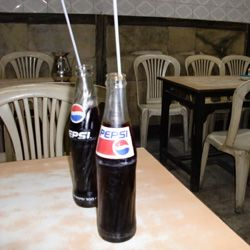
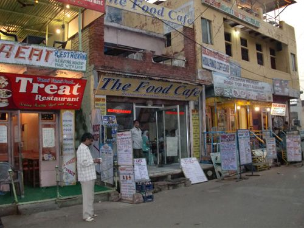

| ついでにインド（上） 35日間女一人インド一周 | |
| 鈴木麻里子 | |
| suemari (2013) | |

はじめに
旅の軌跡
自己紹介
インド予備知識
扉絵
１ プロローグ ついでにインドに行ったわけ
２ コルカタへ 謎のブラビアと親切なインド人
３ 未知の領域 いきなりインド人の家にお邪魔!?
４ あなたも旅人？ サダルストリートで怪しい出会い
５ こいつ大丈夫か!? 怪しいトランプの夜
コラム１ 部屋の選び方
６ 騙しの序章 劇の始まり
７ 俳優もビックリ これがコルカタ一大劇場
８ かかわるな！ 面倒なインド人
９ インドで丸儲け ブラビアの謎
10 ヤツから逃げたい！ バラナシへ
コラム２ インドの列車
11 インドのお祭り
12 こんな所に学校が？ 物凄い道のりを経て
13 ガンガーの朝日と白塗りの変態
14 アグラを歩く１ 世界遺産でアイドルになる
15 アグラを歩く２ 寄付金詐欺と黒い親子丼
あとがき
奥付
はじめに
「インド」と聞くと、まず思い浮かぶのは「カレー」だろう。正直、「カレー」しか思いつかない人が大半を占めると思う。
何か他に思いつかないか考えてみても、せいぜい、「人口が多い」「頭にターバン」「スト２のダルシム」あたりが有力か。
「ヨガ」「ガンジー」「カースト制度」「東インド会社」「ボリウッド」「ＩＴ先進国」と言葉をあげると、「あ、そっか、そう言うのもあるよね」と、日本人にとってインドとは教科書やＴＶ上でしか知らない未知の国であり、一番人気の「カレー」でさえも、日本のカレーとは全く違うということを、私も高校生の時にインド料理屋に行くまで知らなかった。
そんな未知の国、インドへ女一人で初めて行くとどうなっちゃうの!?
「インドのカレーは日本のカレーと違う」程度の予備知識しかないのに、ガイドブック一冊だけを持って、一人旅って大丈夫なの!?
泊まる所は？ 食べ物は？ 物価は？ 移動は？
そんな疑問を、35日間、女一人でインド一周をした私、鈴木麻里子ことスーが、写真＆イラスト満載の旅行記でお伝えしたいと思いまっす！
そして、これからインドへ行こうかと考えている人に、この言葉を贈ります。
やめといた方がいいんじゃない......？
2013年10月 鈴木麻里子(スー)

インド予備知識
人口： 約12億人
面積： 日本の約8.7倍
首都： ニューデリー
通貨： Rs. ルピー
娯楽： 映画
宗教： ヒンドゥー教、イスラム教、その他色々。
主食： カレー。３食カレー。
主飲： チャイ。いつでもチャイ。
英語： インド訛りで、早口で、文法めちゃくちゃ。しかし自信満々に話すのがインド流。
１ プロローグ ついでにインド行ったわけ
2007年11月、私はニュージーランドの北島を一人旅していた。そして、ニュージーランド中にある「バックパッカーズ(略してバッパー。)」と呼ばれる宿で出会った日本人の男の子、シナっちと川でウナギ釣りをしていた。
「ねぇ、シナっち、ここのバッパーって本当にいいよね！ 安いし、ウナギも釣れるし！」
「スーさん、バックパッカーズという呼び方は、ニュージーランド独特で、他の国ではホステルとかゲストハウスと言ったりしますよ」
「え！ そうなの!? バッパーじゃないんだ!?」
「言いませんね」
「シナっちって、他にどんな国に行ったことあるの？」
「タイとかインドとかですね」
ウェーブがかった長髪にヒゲ、そして妙に落ち着いた笑顔。
そんなミステリアスな風貌の20代男性シナっち。
特に何の疑問も感じず、一緒にウナギなんか釣っていたが、ひょっとして彼は、インドで悟りを開いてきたのでは......？
「タイは私も行きたいと思ってるの！ ......でも、インドは何で行ったの？」
タイは色んな人から名前を聞いていたが、「インド」という名を聞いたのは初めてだった。
「いやぁ、航空券が片道１万円ぐらいだったんですよ」
「!! マジで!? そんなに安いの!?」
「バンコクからビーマン・バングラデシュっていうボロい飛行機が飛んでたんです。でももう無くなったとか聞いたけどな～」
「えーっ！ 今は無いの～!?」
「あ、でもバンコクのカオサン通りに行けば、そういう航空券ありますよ」
「ほんと!? じゃあ私もインド行ってみようかなぁ......!!」
そうして、ニュージーランドの帰り、何故か私はスペイン人の友達を追いかけてタイへ行った。
前著「ひょっこり東南アジア」を読んで下さった皆々さま、ありがとうございます!! まだの方は是非っ☆
さて、読者の方にはご周知の通り、その旅は約１ヶ月のお笑い初心者旅行。
しかし実はその時、私は、バンコクへタイ式マッサージを習いに来ていた日本人の女の子マリさんに出会った。
彼女の話を聞いて、「私もタイ式マッサージを習いたいっ!!」との思いが芽生える。
そしてその一年後、、、念願のタイ式マッサージを習いにタイへ行くことに決めた。
あ！ タイに行くんだったら、インドにも行こう！
と思いつき、半年間有効なインドビザを申請し、ガイドブックも買って、インド行きの準備を整える。
そうして、タイとインドで３ヶ月ぐらいの滞在を予定していた。
ところがタイのマッサージ修行が面白すぎて、あっという間に３ヶ月が過ぎてしまった。
もう、インドがどうでもよくなっていた。
インドなんて行かなくていいんじゃね？ タイ最高～！ あー、もうこんな重いガイドブックまで持ってきちゃってさー。ふと値段を見る。
「1800円+税」
ヒー!!!!
タイで一食60円ぐらいの生活を送っていた私が、こんな高級品を持っていたなんて。
ついでによくよく考えてみると、面倒な手続きをして取ったインドビザが使えるのは残り１ヶ月余りとなっていた。
......。
まぁ、インドでもマッサージ修行、できるかもしれないしね......！
ついでにインド、行っとくか。
２ コルカタへ 謎のブラビアと親切なインド人
2009年10月11日 朝７時、バンコクのスワンナプーム空港――。
いよいよインドかぁ～。
バンコクのカオサン通りで購入した、インド行きの航空券(往復19,400円)を握り締め、私は空港にいた。
さて、私の乗るジェットエアウェイズは、っと......？
国際線カウンターの列を眺めながら歩いていくと、むわっとした浅黒い肌の異彩を放つ行列を発見。見落とそうと思っても見落とせない。いや、むしろ見落としたいぐらいのインド人率100％の行列があった。
行き先がインドの「コルカタ」であることを確認し、最後尾に並ぼうと近づいていくと、、、ん？ みんな同じ色の箱を持っている......？
なんと、ほぼ全員がソニーの液晶テレビ「ブラビア」の箱を持っているではないか!?
ここ、レジじゃなくてチェックインカウンターだよね!? ですよね!?
それもなんでブラビアなのっ!? 東芝のレグザじゃ駄目なのっ!? ２番じゃ駄目なんですかっ!?
ヨドバシかヤマダ電機のバンコク支店でも新装オープンしたのか、まさかブラビア持参でないと飛行機に乗せてもらえないのか、と内心あせる。
まだインドに飛び立ってさえいないのに、いきなり理解不能の光景に翻弄される。
ブラビアの箱を持っていない私は完全にアウェイ状態であるが、なんとブラビアの代わりにＥチケットというものを使って無事に飛行機に乗せてもらえ、自分の席へ行くと隣に座っていたのはやっぱりインド人だった。
20代半ばと予想する彼の名はニラジェ。肌は浅黒く顔の彫りは深い。疑いようなく、どこからどう見ても立派なインド人だ。
と言っても、ブラビアを買って飛行機に乗れるぐらいなのだから、怪しい人ではないだろうと、軽く素性を聞くと、安宿街で有名な「サダルストリート」の旅行代理店で働いているらしい。
「えっ！ サダルストリート!? 私もそこへ行くんだけど、どうやって行ったらいいかな？」
「空港からタクシーでダムダム駅へ行って、そこから地下鉄に乗ればいいよ」
「タクシーって、いくらぐらい？」
「50～60ルピー（約100円）、高くても100ルピー（約200円）ぐらいだね」
「へ～！ ありがとう！」
本当はブラビアのことを聞きたくてしょうがなかったが、変なことを聞いて周りのインド人に囲まれでもしたら怖いので、グッと我慢である。空の上だから逃げ場ないし。
ブラビアの売り上げはちゃんと日本に利益をもたらすのかな？ などと余計なことを考えつつ、飛行機は約３時間後、インド時間の朝10時半にコルカタに到着した。
本当にインドに来てしまった～！
まずは両替所で、持っていた50米ドルを2100ルピー(約4200円)に両替。
さて、インドは客引きがしつこいらしいから、相手をしないように気をひきしめて行こう！ と歩き出すも、予想に反して誰も寄ってこない。アレ？ 意外に大丈夫みたい？ おっと、タクシーカウンターは、ここか。
確かDumDum駅までは、50～60ルピーってニラジェが言ってたよね。
当然相場で乗る気満々でカウンターに近づくと、そこにリストがあった。「DumDum」と書かれた部分を見ると、横には140ルピーの表記が。
高いじゃん!! ２倍以上するじゃん!!
どうしよう......。ガイドブックを開く。
う～ん、レベル高そうだけど、バスに乗ってみようかな？
とりあえず空港を出て、方向がよく分からないまま太陽に向って歩き始めると、フラフラとタクシーが寄ってきた。
「ヘイ！ どこまで行くの！」
声はかけてきたものの、笑顔一つない。これがインドなのか？
「サダルストリートだよ」
「150で連れて行くよ！」
えっ、150ルピー!?
サダルストリートまで直でその金額ならいいじゃん！
......いやまて、ここはインドだ。念のために聞いておかねば。
「それってルピーだよね？」
「ドルだよ！」
（※当時 150ルピー＝300円、150ドル＝13,000円）
人相ひとつ変えないあまりにもすがすがしいボッタクリに、思わず噴出した。インドならルピー使えよっ!! 確認して良かった～！
さーて、バス停はどこ......？
おっ！ ちょうど、サリーを着た若い女性２人＆男性のグループが歩いてきた！ 人相も良さそうだし、彼らに聞いてみよう！
「すいませ～ん、ダムダム駅まで行きたいんですけど、バス停はどこにありますか？」
「え？ ダムダム駅？ だったら僕、ダムダム駅までバスで行くから一緒においでよ」
やった、ラッキィィイイ!!!!
ということで、全く分からない所を助けてくれたのは、メガネをかけたガタイのいいインド人青年アーノッブ。
そのまま３人について10分ほど行くと大通りに出た。
「これがインドの通りかぁ～」などと圧倒されているとすぐに黄色いバスが目の前に到着し、周りで待っていたインド人の群集がドッと乗り込む。 ヒェ～！ 私も負けずに乗り込まねばっ!! って、オヤ？
一緒にバスに乗るものだと思っていた女性２人はバスに乗り込まず、笑顔でバイバイをしている。
状況がイマイチ飲み込めず、人ごみを押し分けて乗り込んできたアーノッブを見ると、何と私の分まで運賃を一緒に払ってくれたではないか！ え！ いいの!? (実際小銭持ってないので、超ありがたいんだけど。)
初めて乗るインドのバスは、女性席と男性席に見事に分かれていて、私も女性席へ。
は～っ、とりあえずバスに乗れた～！
あのインド人女性２人は何で一緒に乗らなかったんだろう？ まぁ、とりあえずダムダム駅まで行ければいっか。
パラリラパラリラ～!!
バスのクラクションはとぎれることなく終始鳴り響き、とても煩い上に、正直クラクションの意味が全くない。
しかも窓から見える砂埃が町を覆っていて、凄い所に来てしまったと改めて実感。騒音にまみれてバスに揺られていると、タイがどんなにちょろい国だったかと思えてくる。
そうして20分後、バスは地下鉄ダムダム駅近くに到着。
縦横無尽に車が暴走する道路をひかれそうになりながら横断し、必死でアーノッブにくっついていく。
さて、地下鉄に......っと、入り口まで来た時に、アーノッブが叫んだ。
「ああっ！ 地下鉄が閉まってるっ!! 今日は日曜日だから２時からしか開かないんだ......！」
ええええ～!! 地下鉄が閉まるの～!? そんなの初耳だよ～!!
時計を見ると、時間は11時半。
となると、２時間半ほどここで待つことになる......ちょっと怖いなぁ～。。。駅は薄暗いし、人かどうかよく分からないような人も寝っころがってるし......。
「参ったな～。今日は日曜日だったんだ、忘れてたよ。う～ん......」
アーノッブは顎に手をあて、何か考え事をしている。
「じゃあ......、じゃあ僕はうちへ帰ろうと思うんだけど......」
そ、そっか。連れてきてくれてどうもありが......
「僕んち来る？」
えっ!?
「もちろん判断は君次第だよ。うちはここから少し行った所なんだけど」
え～～～!!!!
３ 未知の領域 いきなりインド人の家にお邪魔!?
いきなりの展開!! インド人の家へ行くなんて超面白そう!!
......でも危険かな!?
うーん、ダムダム駅で一人で待つか、さっき会ったばかりのインド人の家へ行くか!? どうしよう!?!?
駅で一人で待つのはなんか怖いし暑い。（怖くて暑いって何なんだ。）
ええい！ 多分大丈夫だろう！
それではお邪魔させてもらいまっす！
「じゃあ、ちょっと待っててね」
アーノッブは通りへ出て、オートリキシャと呼ばれる小型オート三輪のドライバーに交渉を始め、それから、「こっちへおいで！」と手を振ってきた。
ハイハーイ！ と駆け寄ると、、、
えっ!! こんな所にーっ!?!?
既にデカいオッサンが４人乗っているじゃないか。いきなりレベル高すぎだろう。しかもオッサン全員、私をガン見。
「じゃ、君は後ろね！」
「オ、オッケー！」
私はドキドキしながら、２人のデカいオッサンをギューと向こうへ詰め、リュックを膝の上に抱えて乗り込んだ。
ドライバーの両隣にも乗客は乗り込み、体が外に半分はみだすのがインドスタイルらしい。
ブロロロロロォー。
リキシャで５分ぐらい行った所で降り、またもやアーノッブが料金を払ってくれる。なんかいい人だなぁ......！
そしてついていくと、門のあるマンションがあり、階段を上る。すると、各階のドアには鉄格子が。
わぁ、タイの友達の家と一緒だ～っ!!(※前著「ひょっこり東南アジア」参照)
しかし、このドアの中が一体どうなっているのか全く想像できん......。
いきなりインド人の家なんて、いつも通り凄い展開になったな～。
「ここがうちだよ」
アーノッブはそう言って、ドアを開けた。
「こっ、こんにちは～！」
緊張しつつ中に入ると、そこには女性が２人、驚いて私を見ている。
「ははは、こちら、空港で会った日本人のスーさん」
「どうも初めましてっ!!」
「こっちは、僕の母と、妹のマニーシャだよ」
そう紹介されると、２人は笑顔になって私を迎え入れてくれた。
鉄格子の中はどうなっているかと不安だったけれど、なかなか綺麗な家だ！
インドだから、ある程度の覚悟はしていたものの、途端に安心した。
ふかふかのソファーに腰掛けて、アーノッブとマニーシャと３人で会話をしていると、ななんとその間にお母さんが手作りカレーを用意してくれた!?
「ありがとうございます！」と、笑顔でお礼を言う、が、なんか手際良くない?? ゴクリ。。。も、もし、これに毒が入っていたら......？
食べたら気絶して、インドに来てしょっぱなから全財産失うとかシャレにならんよ......どうしよう......!!!!
目の前に出された料理を緊張しながら見つめる。
でも空港で私から声かけたし、全て偶然だった（と思いたい）し、これが本当の親切だったら食べないのも失礼だし......。
そう、ちょうどお昼どきじゃないか......。 ゴクリ。。。
「ははは、外国人だから食べ方分からないよね？ ベンガル料理は初めて？ こうやって食べるんだよ。ご飯とカレーを混ぜてこねこね、パク！」
あ、食べた!!!! 毒が入ってたら食べないもんね!?
いやまて、例え彼が気絶しても、他に２人いるから関係ないか!? って、え～い!! 考えたらキリがない！ もういいわ!! これ食べたら英雄になれるんじゃ!! こねこね、パク！
・
・
・
・
・
う～ん、なかなか美味ですな☆
しかし、カレーをご飯にかけて、それを右手で混ぜ、右手だけで口に運んで食べるというのが、とても難しい。
そうしてノロノロしていると、「これでお食べなさい」と、お母さんがスプーンを出してくれた。
自国の文化と違うのに、やっさし～！ (ほんと食べて良かった～☆)
食後には、チョコレートのような不思議なデザートをいただく。
これもお母さんの手作りかと思いきや、これは市場で買ってきたとか。食べる前によく見ると、短いまつげのようなものが混ざっていましたが、こっそり取りのぞいて食べておきました。
なかなかおいしかったヨ！
ふーっ、思いがけずおなかいっぱい！ と、隣の部屋から突然、「プォ～～～！」と、ほら貝のような笛の音が。
一体何ごとだっ!? リビングからそっと隣の部屋を覗いてみると、マニーシャが祭壇に向かってお祈りを捧げていた。
THE インドォオ～！
こんな感じでアーノッブの家族は、お腹をふくらませた私を神様に捧げるとかそういうこともなく、何の予定もたてていない私の話を聞いて、旅のアドバイスをくれたりなど、とても親切にしてくれた。
「そろそろ２時になるので、地下鉄に行きますね！」
「待って！ 実は、私、貴方にプレゼントがあるの......」
なんだって～!! 食事の上に、プレゼントまでーっ!?
妹のマニーシャが、はにかみながら出してきたのはコレ。
プラスティックケースに入った、これはガネーシャさん!!!!
ガネーシャはインドの神様の１人で、よく分からないけれど、凄く幸運らしいぞ！ いきなりガネーシャさんをいただくなんて、幸先いい!?
アーノッブは、再びオートリキシャに一緒に乗り、ダムダム駅に来てくれた。しかも切符まで買ってくれ、入り口まで見送ってくれた。
「コルカタで何かあったら僕の携帯に連絡してくれればいいから。じゃあ僕はこれから彼女とデートに行くよ！」
そうか、空港には彼女を迎えに来ていたんだ!?
なのに、見知らぬ外人の私をダムダム駅に送り届けるために彼女と一旦別れ、更に地下鉄が閉まっていたから自宅にまで連れて行って接待してくれたんだ!!
おありがとうございますうううう～～～～!!!!（感涙）
監禁されたらどうしようとか、ご飯に毒が入っていて身ぐるみはがされたらどうしようとか、不安に思っていたけど、ただの超いい人だった！
インドにもいい人はいるんだ！
４ あなたも旅人？ サダルストリートで怪しい出会い
さて、ここからは一人。地下鉄がホームに入ってくると、それは運良く女性専用車両だった。なんかラッキーだなぁ♪
きっとこれからもラッキーだろうと気分を良くしつつ、ガイドブックを開く。
サダルストリートまでは、「パークストリート駅」が近いようだ。でも、インドの通りを歩いてみたいし、一本手前の「エスプラネード駅」で降りてみようかな？
特に深く考えもせず、中心街のエスプラネード駅にて下車。そして階段を上ってまぶしい地上へ出た。
あっつー!! うるさくて砂埃凄いなぁ～。これがコルカタかぁ～。
で、方向どっちかな？ 通り名の表示を探すも、そのような親切なものが全くない。
......とりあえずこっち行って、人に聞きながら行くか。
「すいませ～ん、サダルストリートはどっちですか？」
「あっちだよ」
どうも！ てこてこ......。
「すいませ～ん、サダルストリートはこっちですか？」
「そうだよ」
どうも！ てこてこ......。
「キミ、サダルストリートに行きたいの？ こっちだよ！ おいで！」
え、あ、ありがとう～！ てこてこ......って、シマッタ！ 案内してもらったら、後でお金請求されるかも!?
「ほら、こっちだよ、僕についておいでよ！」
え、いや、一人で行けると思うし......。
「こっちの方向だってば～！」
「もう分かったよ、サンキュー!!」
笑顔でそう言って、顔をそむけてスタスタ歩く作戦にでる。
「僕はガイドじゃないよ！ 僕も昨夜コルカタに来てサダルストリートのホテルに泊まってるんだよ！」
ええっ、そうなの......？ ふーん、まぁガイドじゃないならいいんですけどね......。
「僕はラジャ。ムンバイ大学の医学生で、５週間の休みをとってネパールと北インドを旅行中さ。僕だって旅行者なんだ」
へ～、この人も旅行者なんだ。じゃあ、案内料は請求されないかな？ でも、何が本当かは分からないので、いつでも走って逃げれる心構えはしておこう。
「僕、サダルストリートのホテルに泊まってるから連れて行ってあげるよ！ いいホテルなんだ！」
ん？ やっぱりホテルを紹介して、マージンをもらおうっていう手か!?
「いや、泊まるホテルは決めてるから、サダルストリートだけでいいよ！」
そうしてラジャの後ろを警戒しながらもついていくと......、キャーッ!!
ヤギの大群が普通の道路にっ!!
しかも人んちのツタ、食べてます。サダルストリートって一体......。
「今日泊まるのってどこ？ 僕はシャムスってホテルだよ」
う～ん、あんまり教えたくないんだけど......まぁ、もう近くまで来たみたいだし、いっか。
「タイムスターって所だよ」
「えっ!! タイムスター?? そこ、僕のホテルの隣だよ!!」
そんな都合のいいことがあってたまるか!!
そしてホテルに到着すると、本当に隣同士だった。 マンガか、これは。
「じゃ、僕ここで待ってるから」
「え？ あぁ、うん」（なんで？）
待ってなくていいのに、と思いつつラジャを道路に待たせ、タイムスターに空き部屋があるか聞く。そして部屋を見せてもらうと、評判どおり、まぁ悪くない。う～ん、ここに泊まってもいいんだけど、、、ラジャって、本当に隣のホテルに泊まっているのかなぁ......？ ちょっと隣のホテルもチェックしてみよう。
「どうだった？」
「部屋あったよ！ でも、シャムスも見たいから、こっちも聞いてみるよ」

そう言って、隣のホテルを見ると、看板だけが立派で、その先に見えるのは廃墟のような建物。一体どこにホテルが......？ と不振に思いつつ中に入ると、中は意外にも普通だった。ホッ。
「ハロー！ シングルの部屋あります？」
「狭くても大丈夫なら、一つだけありますけど」
一応聞いておこう。
「......あの～、あの人もここに泊まってるの？」
「ハイ、泊まってますよ」ラジャの方を見てそう言った。
なんだ、やっぱり泊まってたんだ～、ホッ。
鍵を借りて部屋を見に行くと、シングルベッドが一つに、天井が凄く低い、屋根裏部屋みたいな所だった。
まぁ......天井以外は、部屋にコンセントもあるし、窓もあって、シーツも綺麗だし、悪くないかな？ タイムスターより100ルピー高いけど、ラジャもいることだし、面白そうだからこっちに泊まってみよう！
ホテル・シャムス
シングル 300ルピー(約600円)
扇風機の部屋で、シャワーは水のみ。まぁ、暑いので、それは大丈夫なのだけれど、部屋にチェックインできるのは夜の７時からとのこと。とりあえず、テラスで待っていたラジャの元へ行くと、ラジャは従業員にお金を渡し、チャイを頼んでくれた。
ドキッ......！ もしこれに毒が入っていたら......!?
でも、ここホテルだし、従業員が持ってきたし、大丈夫だろう......。
ラジャが先にチャイに口をつけたのを確認し、少しだけ口に含んでみる。
ゴクッ。
......おいしいっ！ 手足もしびれないし、毒は入ってないみたいだ、ふ～っ。
「今日は、空港から直接サダルに来たの？」
「いやー、実は地下鉄に乗れなくて、親切なインド人の家にお邪魔したんだよね！」
「ちょっと！ それ、めちゃくちゃ危ないからさ、知らないインド人についていっちゃ駄目だ！ 子供じゃないでしょキミ！ 絶対駄目だからね!! 分かった!?」
真面目な顔でいきなり説教をしてくるラジャ。
オマエが言うな。
「ところで私、早速観光に行こうと思うんだけど、一緒に行く？」
サダルストリートから歩いて近くのモイダン公園を散歩。たくさんの子供達がサッカーなどをしていて、とにかくただっ広い。馬もいて、「乗らないか？」と言われたりします。しかし、この草むらは何故かゴミだらけで、あまり目をやりたくない......。
そうしてラジャの後ろをついて歩いていると、持ち歩いていたペットボトルの水を飲み終わったのか、いきなり公園の方を向いたかと思うと、ボーンと投げた。
ななんと、ペットボトルを公園の草むらに投げたのだっ!! え～～!!!!
それを見て、ショックで何も言えなかった。おかげで、何故公園がゴミだらけなのか理解できた。
そのまま公園をずーと歩いていくと現れたのは、
ビクトリアンモニュメント 庭の入場料４ルピー(約８円)
ここには広い公園があって、その辺をぐるぐると散歩。日曜日だからなのか、インド人の観光客もたくさん来ていて、家族連れでピクニックなんかもしていてほのぼの。
そうしていると、次第に暗くなってきたので、ラジャについて街中へ戻り、適当な食堂に入った。
「チキンカレーとビーフカレー、どっちにする？」
「え！ ビーフカレーもあるの!? じゃあビーフ！」
ビーフカレー 30ルピー（約60円）
カレーを食べる前に、食堂の隅にあった水道で手を綺麗に洗う。
カレーをスプーンでライスにかけ、右手で混ぜ混ぜして手から口へと運びます。
アーノッブの家で練習したとは言え、結構熱いし難しい。でもここは「郷に入っては郷に従え」で、インド人の皆さんに失礼のないよう、同じようにするのだ。
「私、インド人って牛肉は食べないんだと思ってたよ」
「食べるよ！ だって僕、ムスリムだもん」
ムスリムとはイスラム教徒のことである。
へ～、牛を食べないのはヒンズー教徒で、豚を食べないのがイスラム教徒なんだ～!?
夕食を食べ終わり、外へ出る。
「チャイ飲まない？ チャイ」
「うん、いいよ」
インド人男性しかいないチャイ屋。
テーブルについてすぐさま、ラジャはチャイを２つ頼み、「ＡＴＭでお金を下ろしてくるから、テーブルで待ってて！ 僕が戻ってくるまで絶対に席を動かないで！ もし誰か話しかけてきてもしゃべっちゃ駄目だよ!!」と言って去っていった。
「え？ あ、ハイ」
............。
お金持ってなかったのかな？ それともバックレ？
私、お金すられてないよね!?
チャイがテーブルに２人分運ばれてきて、私はそれに口をつける。
......しかし、周りのインド人にジロジロ見られて、ちょっと怖い。
それにしても、今日歩き回ったけれど、コルカタって全然外人の観光客がいない......。もっと欧米人がたくさんいるかと思っていたのに、お陰で色の白い私は超目立つのだ。
ジロジロ～。
ジロジロ～。
あぁ、もう遅いなぁ......。本当に戻ってくるのかな??
ずっとカバンに入れて持ち歩いていた財布の中身とパスポートを確認したい気分でいっぱいだ。
絶対に席を動くなって言われたけど、これでお金すられてたら本物のバカだよ。もう帰ろうか............って、あ!!!!
ラジャが戻ってきた。
本当に戻ってきた。
うわー、待ってて良かった～。せっかくできた友達（？）を置いてくとこだったよ～。
チャイ屋を出て、通りに出る。
「ねぇ、コーラ飲もう」
え！ また!? 今チャイ飲んだとこなのに!?
「もう喉渇いちゃって。えへへ」
ま、確かに......。
 別の店に入り、コーラをゴクゴク。
ぷは～！ おいしいなぁっ！
確かにインド暑すぎて、水分補給しなきゃやってらんないか～！
ちなみに、ここまで全て、ラジャがおごってくれている。たいした金額ではないけれど、ムンバイから来ているし、お金持ちの学生なのかな??
喉を潤してホテルに戻ると、ラジャはこう言った。
「ねえ、僕の部屋でトランプしようよ！」
５ こいつ大丈夫か!? 怪しいトランプの夜
インド到着初日、サダルストリートへ向う途中で道案内をかって出たムンバイの医学生で旅行者と名乗るラジャ。面白そうなので、そのままラジャが泊まっている同じホテルに泊まることにし、観光案内＆夕食を一緒にした後、トランプに誘われた。
全てが冷や冷やの展開であり、書いている自分も怖いが、冷や冷やはまだまだ続くのであります。
ん～、まだ時間も早いし、ラジャの部屋に行ってみようかな？ 東南アジアでは、よくトランプ詐欺の話を聞くけれど、ここまできたのも偶然っぽいし、危なくなったら、すぐ自分の部屋に逃げよう。
ラジャの部屋へ行くと、私の部屋の３倍の広さでダブルベッド。しかもクーラーがあり、とても涼しい。私の屋根裏シングルとは大違いだ。やっぱりこの人、金持ちなの？
「ちょっと待ってね、トランプ出すから」
そう言って、ボストンバッグの中から服を出す。出てくる服は、きちんとしたシャツで、なかなかどれも質が良さそうに見える。
旅行カバンがあるなんて、やっぱり旅行者なんだ？
カバンの中から、トランプを出し、椅子がないのでベッドの上に向かい合って座る。
「僕、ビール飲みたいから、ちょっと頼んでくるよ、待ってて！」
ラジャはそう言ったかと思うと、ベッドの上に置いてあった何枚ものお札を出しっぱなしにして、部屋を出て行った。
う～ん、なんだろうこれ......。自分はお金持ってるぞアピール?? それとも私を試しているの？
ほどなくしてラジャは部屋に戻り、続いてドアノックと共に、なんとビールが箱ごと運ばれてきた。

「飲む？」
「あっ、ありがとう」
これなら栓も閉まっているし、毒が入っていることはないだろう。
そうしてトランプをしつつ、ビールを飲みつつ、会話。
「インドは初めて？」
「うん、今日タイから飛行機でやってきたばかりだよ」
「予定は決まってるの？」
「いや、何も決めてないよ。でも、私タイで、タイ式マッサージを習っているから、インドのアーユルヴェーダを受けてみたいんだよね！」
「アーユルヴェーダなら、僕できるよ！ 僕も学校で習ったんだ！」
「えっ！ ほんと!?（医学生ならありえるかも!?）」
「やってあげようか？」
「えっ......いや、、、それって服を脱ぐんじゃないの??」
「脱がなくていいよ。アーユルヴェーダにも色々あるんだよ」
「へー。じゃあやってもらおうかな......？」
ラジャの体を改めて見る。
私と同じような背丈のヒョロリとした痩せ型で、私より体重も軽そう。もし何かあっても全力で蹴っ飛ばせば絶対に私が勝てるだろうと踏んだ。
我ながら危険すぎるけど、タイ式マッサージに生かせるかもしれないし、本場のアーユルヴェーダ受けてみたいし、じゃ、、、お願いしまーす。
私はそのままベッドの上でうつぶせになった。
そうしてラジャのマッサージは始まる。モミモミ、モミモミ。
えっ......、ウソ!? 何これっ!?!?
いっ、いやまて、もう少し様子を見てから......。
モミモミ、モミモミ。
ううう......、これはやっぱり......!!!!
超ヘタすぎる～～～!!
これは明らかに素人。っていうか、これがアーユルヴェーダなのかっ!? それとも私の体を触る為に嘘ついたの!?
「ごめん、悪いけど、もういいよ。ありがとう」
ラジャのマッサージがあまりにも下手だったので、背中の手が脇周辺に来たところでストップし、私が習っているのはこんなだよ、と、お返しに本物のマッサージを軽くやってみせた。
「じゃあ、もう自分の部屋に行くわ。おやすみ～！」
......ふ～、どうなることかと思ったけど、無事に自分の部屋に戻ってきた～。
ほぼ全財産持ってる上に、正体不明のインド人の部屋で一緒にビール飲んでトランプ＆マッサージって、めっちゃ危険だったよなぁ。
今頃になって恐怖が襲ってくる。
しかし、ラジャって一体何者なんだろう？
今の所、何も盗られたりしてないし、やっぱりただの旅行者なのかなぁ？
さ、とりあえずシャワー浴びよっと！
服を脱いで、水を出そうとすると、オヤ？ なんだこれは??
レバーをひねろうとしても動かない......。
しばらく悪戦苦闘した結果、レバーをひっぱると水が出ることが分かった。
あー、良かった！ と思ったのもつかの間、なんとレバーを終始ひっぱっていないと水が出ないことが判明。
体を濡らすのにレバーをひっぱる。よし、いけるか。
体を洗うのにレバーをひっぱる。ちょ、ちょっと重くなってきた。。。
頭を濡らすのにレバーをひっぱる。ってええ、腕がぁー！ 腕がぁああ!!!!
腕が疲れるよ～!!!!
何が悲しゅうて、裸でレバーをずっと引っ張り続けねばならないのか!?
インドにレバーをひっぱる修行に来たわけではないのだ。
何とかできないか、何か道具を使えないのか......!?
ピコーン！ あれだー!!
カバンにしのばせていた洗濯紐を取り出し、壁のフックとレバーを固定。
シャー......。
勝った、インドに勝った。ジーン。。。
親切なインド人、怪しいインド人、ひっぱり続けなければならないレバーを何とか攻略し、長い長いインド初日が無事に終了した。
明日はホテル移動しようｚｚｚ。。。
コラム１ 部屋の選び方
バックパッカーたるもの、予定は決めず、どこにどれだけ滞在するかも分からない。安宿があるエリアをガイドブックで調べ、良さそうな宿に目星をつけ、あとは歩いて自分で探す、というのが私のスタイル。
ということで、私が部屋に泊まる前に毎回必ず中を見せてもらいチェックする項目をご紹介しまーす！
・コンセントがあるか
・部屋に洗濯物を干せそうか(紐をひっかけるでっぱりがあるか)
・水道はちゃんと出るか
・ライトはちゃんとつくか
・窓が外から開けられないか
・ドアの鍵はきちんとかかるか
最低限、以上を確認し、あとは、
・チェックアウトの時間
・wi-fiの有無
を聞いて、値下げ交渉にもトライ！
でも、これからはシャワーの水圧や出方まで確認した方がいいかもしれませんネ☆
６ 騙しの序章 劇の始まり
ふぁ～、朝だぁ～。日本から持ってきた「どこでもベープ」という電池式蚊取り線香のおかげか、全く蚊にさされていない。
起きてシャワーを浴び、もう一度パスポートとお金を確認する。
よし、ちゃんとある。
朝食を食べに行こうと玄関へ向うと、ラジャの部屋はまだドアが閉まっていた。
なんだ、まだ寝てるのかな？ ま、いいや。と、一人で外へ出る。
地図を見ると、朝食が食べれそうなのはビジネス街のパークストリートかな？ とあたりをつけて行くも何もなーい......！ ちょっと、普通の皆さんは一体どこで食事しているの??
もう一度地図を見るとマクドナルドのマークがあったので、ヘタレもいいことに、マクドナルドにしようかしら......と弱気になっていたら、なんか発見。
なんか食べたいんですけど......と言うと、サンドウィッチを作ってくれた。
ちょっと多いんで、この半分でいいんですけど......。
これならビスケットにしておけば良かったかなー？
お店の前に座ってもぐもぐ食べていると、小指の第一関節ぐらいあるでっぷり太った大きなハエが飛んできて、あろうことか、私のサンドウィッチにとまりやがった～～～!!!!
ギャ～!! と振り払うも、しっかとつかんで離れない!!
何度もパンを軽く振ったり、手で払うそぶりをしても全く動じない!!
こ、こんなハエがいるなんて!!!!
ヒー!!！（涙） と恐怖におののきながら、腹をくくって最後の手段、震える指でエイと突くと落ちながら飛んでいった。。。
タイのゴキブリも相当ノロいけど、インドのハエもオセー!!（涙涙涙）
お口直しにチャイを飲む 3ルピー(約6円)。おいち☆
昨日はラジャが全部出してくれていたから分からなかったけど、チャイってめちゃ安いんやね!! これからどんどん飲もう！
食後は辺りをブラブラしながら付近のホテルを見てまわり、当初泊まる予定であったタイムスターに移動決定。
荷物を移動させようと、昨日泊まったシャムスへ入ると、、、あれ!? ラジャの部屋が空っぽ!?
昨日、終始私にくっついていたインド人、ラジャの部屋が掃除されている。一瞬パニックになり、受付へ急ぐ。
「すいません！ あの部屋に泊まっていた男性は!?」
「もうチェックアウトしましたよ」
なんだって～!?!?
急いで自分の部屋へ行き、荷物を確かめる。
あった～。良かった～、盗られてなかった～。。。
ラジャも旅行者って言ってたし、移動しちゃったのかな？ 怪しい奴だったけど、さよならの挨拶もないなんて、ちょっと寂しいなぁ。
ま、私も移動しよ。シャムスをチェックアウトして隣のホテルへ移る。
ホテル・タイムスター
シングル 200ルピー（約400円）
一体どこにホテルがあるんだよっ！ という面構えであるが、奥へ進んでいくと、ちゃんと宿があるのです。
荷物を置いて、一息つき、今日は一人で観光にでかけるか、と再び外へ。
タイムスターを出て、シャムスの前を通り北へ歩き出すと、、、なんと向こうからラジャが歩いてくるでないの!?
「ちょっとラジャ！ どこ行ってたの!?」
「近くにおばさんの家があるから、そこに泊まることにしたんだ」
へー、そうなんだ～。じゃあまだコルカタにいるのかぁ。
「今日は何するの？」
「僕、服を買ったんだけど、その服にボタンをつけてくれるよう頼んだんだ。だから、そのお店へ服を取りに行くよ」
なにそれ、面白そう！ どんな服買ったのか見たいなぁ！
「私も一緒に行っていいかな!?」
「うん、いいよ」
人通りの多い中を歩き、４～５階建ての、とある雑居ビルに入った。まだ早い時間だからか、シャッターの下りている店舗もたくさんある。階段を下りたり上ったりし、ぐるぐると迷路のようなビルの中をついていくと、そのお店に到着したようだ。
４畳ほどの小さい店で、ラジャがお店の人に何かを言うと、ついたての奥に通された。
そこには赤い絨毯が敷いてあり、小さなちゃぶ台が一つ。ここで待っていれば洋服が出てくるのかな？ と座ると、別のインド人が現れた。
「やぁ、僕はカーン。チェンナイでビジネスマンをしていて、出張でコルカタに来てるんだ」
私達に、「初めまして」と握手をし、ちゃぶ台の前に座る。
ヒゲが濃く、生理的にちょっと気持ち悪いオッサンという感じだ。
「すいませーん、チャイ下さ～い」
３人が席についたところでラジャが、向こうをむいてそう言った。
またチャイ～？ 何でそんなもんここで頼むの!? そんなに飲みたいかチャイ!?!?
ちょびヒゲをはやした男がついたての奥から現れる。
ラジャがお金を渡そうとすると、男は首を振った。
「いやいや、あなた方は私の大事なお客様ですから、私がチャイをごちそうします。ダージリンのいい奴ですよ」
「ええっ！ 本当ですか店長!? それはどうもありがとうございます！」
ラジャは驚き口調でそう言って、３人分のチャイが出てきた。
こんなワケの分からん場所に来て、毒が入ってたら今度こそ終わりやな......。
２人がチャイに口をつけたのを確認し、私も舌がしびれたりしないか様子をみながらいただく。
チャイを出した後、ちょびヒゲ店長は、さっさとついたての奥へ戻ってしまい、なんだかまったりした時間が流れ始めた。
７ 俳優もビックリ これがコルカタ一大劇場
雑居ビルの一角にあった４畳ほどの小さなお店の中には「ついたて」があり、その奥の1.5畳ほどのスペースにてチャイをすすりながら、話は始まる。
カーン「僕は今朝の新聞でこの店が40％オフだっていうから最高級のスミーシュを買いに来たんだ。僕は家族を愛しているから家族のために買うのさ。こういう店では、物を見る目を持っていないと、スミーシュだって言われて高い値段で買って、実は二級品だってことがあるからね。僕はその見分け方を祖父から聞いてきたから、最高級の品を買うよ。君達も今日ここに来てラッキーだね」
ラジャ「あの、スミーシュって聞いたことないんですけど、それは一体何ですか？」
私もそんなの聞いたことがない。いい質問だぞ、ラジャ。
カーン「羊のあごひげで作られた物で、カシミアよりもっといい物だよ。僕は家族を愛しているからそれを買いに来た。父や母にプレゼントするためにね。知ってるかい？ コルカタはインドで一番物価が安い所なんだ。工場がたくさんあるからね。ムンバイやデリーは高いよね？」
カシミアよりいい物って、パシュミナじゃないの？ まだ上があったんだ？
ラジャ「ええっ！ コルカタが物価が一番安い!? それは知りませんでした！ ムンバイなんて高くて何も買えませんよほんと......！」
やっぱりラジャはムンバイから来てるんだ？
カーン「スミーシュは本当にいい商品なんだ。もし本物ならコルカタで卸で大量に買って帰ることもできるしね。君達も家族のことを愛しているならスミーシュを買った方がいいよ。こんな機会、滅多に無いしね」
ラジャ「もちろん僕も家族をもの凄く愛している。だから母に買います！」
ええっ......！ 値段も聞いてないのに、そんな決断を!? インド人の家族愛って強いんだなぁ。
でもまぁ、まずは物を見てからでしょ。。
ラジャがこの店に来たのは、新しく買った服にボタンをつけてもらうためだったのに、その服もなかなか出てこないし、店長も奥にひっこんじゃったしで、こんな会話やカーンの仕事の話などを聞いて、結構時間がたつ。
一体そのスミーシュはいつでてくるんだよ......と思っていると、30分ぐらいして、やっとカーンが店長を呼んだ。
カーン「今日はこの店40％オフだよね？」
店長「ええっ！ なんですって!?!? 40％オフ!? そんなバカな！ 10％オフですよ」
おいおいおい、話が通っていないじゃないか。40％オフじゃなかったら、今まで話した会話が無駄になりますよ。
カーン「僕はね、今朝の新聞で読んだのさ。この店が40％オフだってね。上司に電話して確認してみるといいよ」
驚きと納得いかないといった表情をした店長は店の奥にひっこみ、しばらくしてまたやってきた。
店長「申し訳ありません、私のミスでした。新聞は毎日読んでいるんですが、今朝の新聞は読んでいませんでした。確かにあなたの言うとおり40％オフでございます」
カーン「そうだろう。じゃあ、最高級のスミーシュを見せてくれ。100％ピュアのね」
店長「ええっ！ ちょっとまってください。スミーシュなら二級品をまず見てくださいよ。そっちの方がお買い得ですよ！」
なんで二級品を売ろうとするの?? 店長アホなの??
カーン「言っただろ、最高級のスミーシュだ。100％ピュアな奴だ。僕は二級品はいらないんだ。家族にプレゼントするんだからね」
店長「はっ、、かしこまりました......」
奥から店長が品物を持ってきてカーンに見せる。
カーン「どれどれ......」
カーンはスミーシュをぎゅっとつかみ、そしてパッと離した。
すると、つかんだ跡が残った。
カーン「これは混ぜ物があるね。これは混ぜ物がある。僕は100％ピュアな物を見せてくれと言ったハズだよ、店長？ 僕は偽物との見分け方を知ってる人間なんだよ」
店長「ハッハッハ！ 貴方は確かな目を持ってらっしゃるようだ。これは参りました。お待ちください」
本物持ってこいよ店長......。
再び店長が別の品を持って来て、カーンは同じようにテスト。
すると跡はつかなかった。
カーン「よし、これは跡がつかないね。じゃあもうひとつテストさせてもらう。火を使うよ」
驚く我ら一同。
火!? 火って!?!?
カーン「ほんの少しだけ燃やさせてもらうよ。本物を燃やすと、人間の髪の毛を燃やしたのと同じような匂いがするんだ」
と言ってもアンタ、商品に火って......（汗）
皆がドキドキと見守る中、カーンはマッチをすって布の端にパラパラとついてる紐状の先っぽを少し燃やした。
そして匂いを嗅ぐ。
カーン「おぉ、これは本物だね」
私達にも匂いをかがせ、確かに髪の毛を燃やしたような匂いだと分かる。
ついでに、さっき持ってきた二級品の先っぽにも火をつけ、匂いをかがせる。
こっちはプラスティックのような匂いがしたので、確かに違うと分かる。
店長「おお、貴方は本当に見分け方を知ってらっしゃるのですね......！ 参りました!!!!」
店長は色んな色のスミーシュを持って来て、私達３人の前に並べる。
カーンは２つ選び、ラジャは１つ選び、私は買うつもりはないのだけれど、カーンが「家族を愛しているなら買うべきだよ!!」と勧めてくるので、１枚だけ選んで自分の前に置いた。
......パシュミナもカシミアも持ってるし、別にいらんのだけど......まぁ、、、2000円ぐらいなら買ってもいいかな。。。。
カーン「じゃあ値段を教えてもらおうか」
店長はメモ用紙の上に金額を書く。
一同がそれに集中する。
一体いくらなんだろう......
ゴクリ。
店長が紙に書いた値段は......
「195ドル」（←USドル、つまり19,500円）
たっ、たけぇえええ!!!!
一同が冷や汗をたらす中、「ちょ、ちょっと皆で相談します......！」とカーンが言い、店長に奥にひっこんでもらう。
私でも高いと思うのだから、インド人の彼らにとったらむちゃくちゃ高い金額である。
さて、インド人の交渉術とやらを見せてもらおうじゃないの。
まぁ私は2000円ぐらいじゃないと買うつもりないけど。別にそんないい品物いらんし。（パシュミナもタンスにいれといたら、虫食っちゃったし。）
ラジャ「いくら何でも高すぎます......！」
カーン「そうだね、これはムンバイやデリーの値段だね」
チェンナイから仕事の用事でコルカタに来たカーンはそう言う。
カーン「じゃあ、いくらで交渉する？ さぁ、書いて」
......一体、インド人ならいくらで交渉するんやろ、ゴクリ。
ラジャが書いた金額は50ドル。
ラジャ「僕、学生で、お金ないんで......」
ええーっ！ インド人でもそこまで出すつもりあんの!?
高いよ......まず買わんな。
カーン「うーん、、、じゃあこの金額で交渉してみよう、60ドル......」
やっぱ高いなー、すごいなーインド人、買うつもりなんやー。
ちなみに私は全く買うつもりがないので、横で面白く見ているだけである。
カーンが店長を呼び出し、書いた紙を見せた。
それを見た店長の表情は、驚きを隠せないといった様子。
店長「ご冗談でしょう？ これは冗談の価格ですよね......？」
カーン「これが僕の最終価格だ」
あくまでも強気のカーン。さすがビジネスマンだ。
店長「分かりました。私の最終価格はこれです」
店長も、負けまいと冷静な顔をして紙に数字を書き込んだ。
135ドル。
..................。
し～ん。。。。。。静まる一同。
カーンが私に聞いてきた。「どうする？」
「私は買わないよ」
「そうか......ラジャは......？」
「僕も買えません。高すぎます。。」
「そうか......僕にも無理だ。。。」
交渉は終わった。
って......、商品燃やしておいて結局買わんのかい!!
一体、この時間は何だったんだ......。
ラジャは、預けていたいた服を受け取り、雑居ビルの外へ出た。 そう、もともとこの店にはラジャの服を取りに来たんだった......。 しかし、面白い寸劇が見れたなぁ。
８ かかわるな！ 面倒なインド人
特に何を買わされるでもなく、無事に終了したコルカタお笑い一大劇場。しかしその後、３人でご飯でも食べに行こうと誘うとラジャは、「僕、ちょっと気分が悪くなったから......」と離脱し、多少の生理的嫌悪感が残るカーンと昼食＆映画を見るという荒業をやってのけた私。
一体何やってんだ？
とにかく全て無事なのだけれど、心の中にはスッキリしないモヤモヤがいつも漂っていた。
さて、ガイドブックを持ってきただけで何の予定もたてていない私。しかし、これからインドに約１ヶ月いるつもりなので、緊急連絡用に携帯のＳＩＭカードを99ルピー(約200円)で購入。ラジャの電話番号も聞いていたので、翌朝電話してみると、いつも通りふらっと現れ、朝食を食べに連れて行ってくれた。
こんなとこ。
一応店にはメニューが掲げられていて、その中から頼もうとしてみたのだけれど、そのメニューの品は一つもなかった。
つーことで、ラジャが頼んでくれたのはコレ。
野菜カレー
小さいパン
甘いお菓子
で、10ルピー（約20円）
左側にある「の」の字のようなお菓子にまつげのようなものがついていたので、ハラリと取る。
インドで何か食べるときには、このように注意を払う必要がある。
（ちなみに、東南アジアでは、まつげ、髪の毛、アリ、虫、などがたまに食事の中に入っています。よく確認してから口に入れましょう。）
この後、ラッシー（ヨーグルト飲料）が飲みたくなったので、喫茶店に入ってオーダー。
 15ルピー（約30円）
15ルピー（約30円）
ラッシーを飲み終わると、なんとコップの底に髪の毛を発見。。。
インドで何か食べるときには注意を払う必要があるのだけれど、底に入っていたのではどうにもなりません。。。（涙）
ところで、インドに来てから私はずっと英語で話していた。そう、今までの面白いやりとりだって、全て英語である。
皆さんにご理解いただく為、日本語に翻訳して書きつらねておりました。フフフ......。
さて、ラジャが、「どっちの道に行く？」と、いつも通り英語で聞いてきたので、私は思わず日本語で「こっち」と答えた。
「いいよー、こっちねー」（←日本語）
なっ、何ぃぃいい!? ラジャが日本語しゃべった!!
日本語しゃべるなんて、こいつやっぱり詐欺師じゃないの!?
そう、海外で日本語を話す地元民はかなり怪しいと思っている。もしラジャが始めに日本語で話しかけてきていたら、私は完全に無視していただろう。
よし......、どれだけ話せるのか確かめてみよう。
「ねぇ......たくさん日本人の友達、いるの？」
「いないよー、初めての友達ねー」
「日本語どうやって勉強したの？」
「自分でねー、本だよー」
本だけで勉強したには発音などがうますぎる!! しかも会話を続けると、「めっちゃ」とかいう、本には絶対載っていないような言葉まで知っていたのだ。
ラジャはこれまでのところはいい人で、一緒に行った食事も、私は自分で払うと言うのに、お金を出しても一切受け取らない。
これまで良くしてくれて、今のところ何の問題もないけれど、日本語が結構できるというのはやっぱり怪しく思ってしまう。
もう深く関わるのやめよう。移動しよ。
「あのさ、私、明日バラナシに行くことにするよ」
「!? なんで!? 僕が日本語しゃべるから!? たくさんの日本人は、インド人が日本語しゃべると怖いんだよね！ 僕、ほんとに初めての日本人の友達で、本からしか勉強してないよー！ 僕がアナタを騙すと思ってるでしょ!? それならその通りだよ！ 騙されると思えば騙されるし、そうでないとアナタが思えばその通りだよ!!」
うーん、、、ちょっと悪いことしちゃったかなぁ。。。
でも日本語うますぎる。
ちょっとヤバかったかな、と思い、「別に疑ってるわけじゃないよ!! そろそろ移動したいと思っただけだよ!!」と、逆ギレで返すと、少しビビったようである。
雰囲気は少し悪くなり、店を出て通りを歩いていると、ラジャが携帯で知り合いに連絡をつけ、何故か私も今から一緒に行くという話に。
その知り合いというのは、昨日私がカーンと映画を見ている間、１人で先に家に戻ったはずのラジャがたまたまコルカタの人と知り合いになり、その知り合いの親戚が日本人の女の子と結婚して千葉に住んでいるという。ちなみに女の子は山形出身。
マイナーな県名まで登場し、わけの分からない設定である。
私はその千葉に住んでいる山形妻のいるインド人と何故か昨日国際電話で話したのだけれど、私のあずかり知らぬ間に、そのコルカタ在住の親戚の人に会わせたいという話に発展したようだ。
日本人というだけで、山形妻のいるインド人の親戚に会う権利を得た私は、その権利を放棄させていただく隙もなく、ラッシー屋の近くまで来ていた迎えの人と合流。
危険だったらすぐに逃げよう、といつも通り警戒して行くと、そこはおみやげ屋さんだった。
「やぁ、よく来たね！ まぁ座ってチャイでも飲んで。私の親戚が日本人と結婚してね。このお店は、日本で看護師をやっている日本人の嫁がお金を出して買ったんだよ。親戚は千葉に行ったから、それで私はこのお店をまかされている。だから私に日本の話を色々聞かせておくれ」
へ～、小さいけどなかなか新しいお店じゃないの。日本人の嫁が買ったのかぁ。いくらぐらいかなぁ？
「日本人の嫁は、３年前にインドに一人で来てうちの親戚と知り合ったんだ。君みたいにね。それから毎年インドに来て、ついに結婚したんだよ」
へ～。
「ところでインドは初めて？ 今日はどこに行くの？ え、まだ決めてないの？ そうか、じゃあタクシーでココとココへ行くといい。コルカタではタクシーが安くて便利なんだ。案内はこの若い子（ラジャ）がするだろう」
タクシーだって？ まぁラジャがいるなら（助けを借りて）一度ぐらいタクシーに乗ってもいっか。じゃあ、提案は無視してタクシーでしか行けない所に行ってみようかなと、動物園と図書館に行くことに決めた。（←インドに来てまで何だその選択。）
もしこれで、タクシーが既に用意されていたら拉致されるかもしれないので絶対乗らないと決めていると、ラジャは流しのタクシーをつかまえた。
タクシーにラジャと２人で乗りこみ、約4km先の動物園へ。
料金は46ルピー（約92円）で、今回は自分で払った。
動物園に入る前に、セキュリティでカバンの中身を見せるように言われ、入場料10ルピー（約20円）を払って中へ。
あまり綺麗とは言えないコルカタらしい動物園を歩き回り、
珍しいというホワイトタイガーを一応見る。
そして図書館へも寄り、再び流しのタクシーでサダルストリートへ戻ると、ラジャの携帯に電話がかかってきて、なぜかまたみやげ屋へ行くことに。
オッサンと話すと面倒くさいので、早く切り上げて店の外へ出ようと思っていたのに、
いつの間にかラジャがオーダーした夕食が。
私は、このみやげ屋に、カモれる客として連れてこられたのかと思っていたが、ひょっとして嫁候補として連れてこられたのではないかと頭によぎる。
なぜなら、みやげ屋なのに、全く物を売りつけてくる気配がない。
観光もいいけど、地元の人と触れ合うのも旅の一つと楽しんでいた。それがバックパッカースタイルの旅であり、多くの風の旅人の皆さんも同意してくれると思う。それまでに他の国でも、いち日本代表としてたくさんの友好関係を築いてきた。しかし、この紅茶の国では、地元の人と触れ合うと非常に面倒くさいことが分かった。
「家族は何人？ 兄弟は何人？ 仕事は何？ 君はベストフレンドだ。 他のインド人は信じるな！ こいつはいい奴だ。今日のプランは？ どこ行く？ 何時に？」
みんな、口を揃えて同じことを言ってくる。詐欺師マニュアルだろうか。
早々に夕食をつまみ、さっさとズラかろうと席を立つと、「また後で来てね、約束だよ～！」などと本当に面倒なことを言ってくるので、「来たかったら来ます」と、店を後にした。
め、面倒くせ～～。。。
とにかく、今の所、騙されたわけでも何でもないのだけれど、口で説明するのが面倒なくらい、親切過剰なのだ。
そして、つながりがとても深いのか、ただ単に皆からグルになって騙されている途中なのか分からないけれど、なんともプレッシャーのかかるしつこさである。
でも彼らのおかげで、今の所なんなく安全にいけてるので感謝している面も、少しはあった。
９ インドで丸儲け ブラビアの謎
みやげ屋のオッサンの店からやっと開放され、何か飲みたいと思い、通りを歩いている途中にこんなもの発見。
レモンの絞り汁っぽいジュース。
冷た～いのを期待したのに、ぬる～い！（涙）
しかも、しょっぱくて超マズいし、水に胡椒のような点々が混じっていて、コレ飲んで大丈夫なの!? 大丈夫なの!?!?
と不安になり、半分残す。
これならラッシーが飲みた～い！ と、サダルストリートに戻ってラッシー屋さんへ行こうとすると、相変わらず私にくっついてきていたラジャが、「この道は通りたくないね!! 危険ね危険......！」と、なんだかとっても怖がっているじゃないの。
えー、、、昨日の夜、私そこのラッシー屋さんで飲んだし、安かったし。。。
今昼間だから大丈夫なんじゃないの!?
と、ラジャを説得するも、全然行きたがらないので、ラジャと別れて一人で行くことに。。。
インド人も怖がる通りって何なの何なのーー!?!?
こういう所の端にある椅子に座って一人でラッシーを飲むわけですが......。
あー、ラッシーおいしいな～。。。おいしい。。ハズなのに、恐怖が襲ってきて気が気じゃない。。。
いくら昼間とはいえ、こんな危険な所でのんきにラッシーなんて飲んでていいんだろうか。
いやいや、大丈夫でしょ!! さて......、まだ明るいし、スーパーに行ってみよう。
......って、一人で歩くのめっちゃくちゃ怖ぇ～!!
サダルストリートはバンコクのカオサン通りと違って全然甘ったるいものではなく、顔をゴルゴ１３のように険しくして常に警戒して歩く必要がありそうだ。
外国人も全然いなくて、まるで獲物かのように皆ジロジロと私を見るのである。
コルカタのサダルストリートに女１人で来ようと思っている人は、マジでやめといた方がいいですＹＯ!!
しかも恐ろしいことに、４日ほど前に、ヨーロッパ人の女の子が一人で夜歩いていて、強盗にあったとか言ってたよな。。。
はははは......。
俺の後ろに立つなぁあ......!! と気を張り巡らしつつ、やっとスーパーに到着。
スーパーと言っても、戦後のようにあまり物が置いていなかった（涙）。
とりあえず日焼け止めを１個買い、ゴルゴの顔つきなら大丈夫そうなので（？）、もう少し辺りをブラブラしてみることに。
まてよ......サダルストリートと言えば、、、飛行機の隣の席だったニラジェの旅行代理店があるはず！ 邪魔者（ラジャ）もいないことだし、そこへ行ってみよーっと！
「ハ、ハロ～？」
ドキドキしながら、名刺に書いてあった小さな店舗の中を覗くと、そこには４人ほどの大人のインド人がいて、一斉に私を見た。
「あ、あの～、、、ニラジェいます～??」
恐る恐るそう言うと、奥から若いインド人がひょこっと顔を出した。
「あっ！ やぁ、キミかぁ!!」
ニラジェの知り合いと分かると、周りのインド人は笑顔になり、「女の子が訪ねてくるなんて、やるなぁ、コノヤロ～！」「外人たぁオマエも隅に置けねぇなぁ、ヒューヒュー！」と、ヒジで小突いてはやしたてる。
あの～、私別にそんなつもりじゃ......と、香ばしい雰囲気にこっちまで恥ずかしくなってくる。
仕事中みたいだし、忙しかったかな～？ と見ていると、ニラジェは襟を正し、「じゃ、行こうか」とにこやかに言ってきた。
「ええっ！ 仕事いいのっ!?」
「大丈夫だよ！ ニコッ」
同僚の人にヒューヒュー言われつつ、旅行代理店を出る。
「インドに来て、何か食べた？ 好きなものは何？」
「カレーは何度か食べたけど、、、あ！ ラッシーが好き！」
「ここが僕のお気に入りのお店だよ」
と、地元民で溢れるフルーツラッシーの喫茶店に到着。
へ～、こんな所あったんだね～。ラッシーもおいしいっ！
「さて、じゃあこの辺をちょっと案内するよ」
ここがマーケットで～、このレストランはなんたらで～ぐるぐる～。
「ハイ、これ食べたことないでしょ？」
ニラジェが通りで買ってくれた、なんか食べ物。多分1ルピー（約2円）。
餃子の皮っぽいものを揚げたものの中に、スープが入っていて不思議。ちょっと食べにくいけど味はまぁまぁ。
「これ、知ってる？」
これも買ってくれた、なんか食べ物。
ポン菓子やベビースターラーメンのようなものが混ざっていて、なんだか縁日を思い起こさせる。普通に食べられる。
すごーいすごーい！ こういうの食べてみたかったの！
ニラジェはラジャと違い、大通りの地元民で賑わっている所を笑顔で案内してくれ、ポン菓子を食べつつ、広場の一角に座る。
これだったら、さっさとニラジェを訪ねてみれば良かったな～。やっぱりブラビア買って飛行機に乗れる人は違う。......って、そうだ！ ブラビア（ソニーの液晶テレビ）のこと聞いてみよう！
「ねぇねぇ、バンコクの空港でみ～んなブラビア持ってたでしょ？ あれ、何で？」
「あははは......、あれね」
照れた顔でニラジェが笑う。
「あれは自分用じゃないんだよ。実は、ブラビアをデリーで売るんだ。バンコクで買ってデリーで売れば、３～５万円の利益が出るんだよ。だから皆買って帰るのさ。ちょっとしたビジネスだね」
マジでー!!!!
だからインド人は皆空港にブラビアを持ち込んでいたのか！
インド人すげー......。
「じゃ、そろそろ僕、家に帰るよ。インドの旅、楽しんでね！」
「うん、今日はどうもありがとう！」
ブラビアの謎も解け、普通のインド人がしつこくないことも分かり、一石二鳥の再会であった。
10 ヤツから逃げたい！ バラナシへ
車の騒音と砂埃に覆われた街、コルカタ――。こんな所にダラダラいてもしょうがない。どうせ最後にも飛行機に乗るために戻ってこなきゃならんのだ。
それよりも、本心は正体不明のラジャから逃れたかった。
ガイドブックを見ると、鉄道で行ける面白そうな所はバラナシ。切符は「イースタン・レイルウェイ予約オフィス」で買えるらしいので、そこへ行く必要がある。距離的には３kmぐらいっぽいので、多分歩いて行けるかな......？
と、歩き始めると、「ハウラーハウラーハウラー!!」と、何度も叫ぶバスがいた。
ハウラーと言えば駅だ。
チケットオフィスにいかなくても、駅に行けば買えるよね......？
バスに乗りこみ、一体いくらなのか周りのインド人を観察しつつ、私も10ルピーを出すと、おつりが4ルピー帰ってきた。
つまり乗車賃6ルピー（約12円）、安っ！
インド人に紛れ、荷物に注意しながらのバスからの眺め。
ヒー！ なにこれー！ スラム街っぽーい!! 歩いて行かなくてヨカッター!!（涙）
ハウラー駅に到着し、切符が買える所を聞き周って、色んな所をたらい回しされるも、結局買えず......。
めちゃめちゃ並んだあげく、終いには「外国人専用のチケットオフィスに行け」と言われ、フェリーに乗って川を渡り、やっとこ到着して買えた～！
コルカタ～バラナシ 269ルピー(約538円)
「3-Tier Sleeper」という３段ベッドの一番上ゲット！
このオフィスは確かに外国人専用で、エアコンもきいていてすぐに買えたのだけど、こんなことなら最初からこっちに向かえば良かった。。。（あのスラム街を歩いて？ 否！ 否！ やっぱりこのルートで間違ってなかったと前向きに考える！）
パークストリート行きのバスを捕まえて、サダルストリートまで戻り、荷物をまとめ、シャワーを浴び、夜の７時頃に再びバスでハウラー駅へ。
さよなら、騒音と砂埃の街、コルカタ――。
駅に１時間前に到着し、電光掲示板をチェック。私の乗るDoon Expressを見つけ、「SL(スリーパー、寝台車)」と書かれた車両のドア横にある紙に私の名前を確認。そう、インドでは車両に名前が張り出されるのである。
自分の席を見つけ、靴のまま荷物と共に寝台に上り、一人だけが寝れるスペースの頭の片隅に荷物を置きます。
よって、荷物が大きいと、体の大きい人は寝れないかもしれません☆
靴も盗られないよう、当然寝台の上に置き、荷物は車両とワイヤーロックで固定。
３段ベッドの一番上からの眺め。
見ての通り、カーテンとか無く、丸見えです。
シーツとかいった、気の利いた物も一切ございません☆
駅で買ってきたパンとデザートを寝台の上で食べ、荷物盗られませんよーに、と願いつつ就寝。
朝になると、朝食やらチャイ売りやらが叫んで歩いてくるので、それで起きる。
朝だし大丈夫かなと、下の段へ降りてインド人の横に一緒に座ってみる。
すると横の狭い通路から、何かやってきた～!!
「ナムーシュナムーシュ......」
ふんどし一枚とターバン姿の、額に横３本線を書いたガリガリのおっさんがやってきて、私の前で変な言葉を大きな声で唱えだす。
ヒ～～～!! 怖いよーっ!!!!
ずっと窓の外を見て、目をあわさないようにしていたら、最後に頭を触ってきた、ギャー！
「金だせナム～シュ」
頼んでもないし、頭も触られたのに、金なんてやりたくないっ!!
怖い顔でジーッと私を凝視するオッサンを見て、気丈に首をブルブルと横にふる。
恐怖に包まれながらこちらも睨み付けていると、しばらくして、オッサンは去っていった。
インドの列車怖ぇ～!!!!（涙）
すぐに寝台席へ上りなおし、もう下に降りるのはやめた。。。
そうして列車は出発から15時間後、40分遅れの午前11時にバラナシ駅に到着～。
人がわんさといて、「ウェルカムトゥバラナシ！」と、横を歩いていたオッサンに声をかけられる。
「どこ行くの～？」と、日本語で声をかけてくるが、無視して歩く。
全部リキシャの客引きだ。
まずは駅構内の側にあったツーリストインフォメーションで地図がもらえるらしいので、そこへ行ってみると、ヤッター!! 日本人の男の子がいるっ!!！
「こんにちは～!!」
声をかけると、ケンちゃん(26)はガヤーから私と同じ列車で来たらしい。これは天の助けーっ！
「あの～......、インド怖いので、一緒に街の方まで行ってもらえませんか!?」
そう、とにかくインド怖い!! よくこんな所一人で旅する人がいるもんだと思う。
ってことで、インフォメーションでリキシャの相場や、手ごろな宿を教えてもらい、外へ出る。街へはリキシャで移動するのだけれど、声をかけてきた身なりのいいオートリキシャのオッサン、ゴータムさんが「２人で４５ルピーでいいよ！」と言ってきた。
インフォメの相場は５５だったので、少し安い。４５ルピーのそのわけは、自分の知っている宿へ連れて行くというものだった。
「う～ん、でも、私この本にある、この宿に連れて行ってほしいんですけど」
「今日は祭りだしインド中から人もたくさん来ているので、そこはいっぱいで無理だろうね。それに中心街は治安があまり良くないから、ちょっと離れている所の方がいいよ」
え～、本当かなぁ？ まぁ、とりあえず見てから決めるかと、ケンちゃんと２人でゴータムさんのオートリキシャに乗り込んだ。
ゴータムさんが最初に連れて行ってくれたところは、治安の悪そうな路地の奥で、ちょっと場所的に怖い感じだったのでやめ。
次に行った所は、欧米人もたくさんいて、緑もあってテラスが凄くいい感じの所だった。
念のため、もう一箇所行きたいと連れて行ってもらった所が部屋も広くて、細い路地もそんなに悪くなく、シングルの部屋200ルピーを170ルピーに割り引いてくれたのでそこに決定！
P.G. ONGANGES GUEST HOUSE
シングル 170ルピー（約340円）
色々とアドバイスをくれつつ、ここまで連れてきてくれたゴータムさんは、結果的にいい人だったので、２人で50ルピー（約100円）を払い、帰りにも利用できるよう電話番号を聞いておいた。
ＰＧゲストハウスも私達にチャイをご馳走してくれ、宿が決まったのでとりあえずホッ。
通りのお店で冷たい水１リットル13ルピー（約26円）を購入し、それを飲みながら、ガンガー（ガンジス川）沿いを散策開始～！
きっ、汚ったな～!!！ そして臭い......。
写真の右端では、ボートの底を修理していますね。
牛がー！ 牛が行く手を阻むー!!
聖なる川ガンガーなので、沐浴している人がたくさんいるのかなと思っていたのだけれど、お昼だからかほとんどいなく、
代わりに牛が沐浴。
ガンガー沿いからメイン通りのダシャーシュワメードロードに出て、今度はそのあたりをウロウロしてみると......
ヒィィィ、汚い......！
その横で売っている、新鮮な(？)野菜。
まだインドに来たばかりだけれど、インドって国はなんて無秩序なんだ。。
ついでに砂埃が凄いので、マスクは必須です。
この辺りが中心街で、ついでなので、最初に行こうと目星をつけていた宿をいくつか見ると、ちょっと暗くてジメジメした感じで似たような金額。
少し遠いけれど、ゴータムさんが連れてきてくれた宿の方が全然いい！ 駅でいい人に出会って良かった～!!
しかし、この中心街近くの宿の安い部屋には、１ヶ月単位で住んでいる日本人が何人かいるらしい。 こんな所に長期滞在する人は一体どんな人なのだろう。。空気がよどんでいて、もっと言えば死体でも転がっていそうな雰囲気で、ずっとそこにいると頭がおかしくなりそうだった。
周りも暗くなり始めたし、そろそろ自分の宿へ戻ろう。
コラム２ インドの列車
インドを一周するのに乗った列車の回数は９回。うちSLと呼ばれる３段寝台を利用して列車で寝たのが７回。
私はタイやマレー鉄道でも寝台車を利用していたので、列車で寝ることに抵抗はなかったが、そこはやはりインド、一筋縄ではいかなかった。
まず、シーツもカーテンもないっ！
当然毛布などなく、窓の壊れた秋の北インドでは震えながら寝ていた......。
そして、朝になると「チャーイチャイチャイチャイ！」とチャイ売りやら軽食売りの皆さんが大声で行ったり来たり。
他のインド人も起きて座席に座り始めたからと、うっかり寝台から座席に降りようものなら、ジロジロと全員からガン見され、更に乞食だか聖者だか体の不自由な人だかが金をせびりにやってくる。
こんな稀有な体験ができるのはインドぐらいなのでは？
恐ろしいので、私はいつも一番上の寝台を予約し、人々が起きても上段にい続け、下界を見下ろしながらインド人観察をしていた。
上段だと、日本人がいるのも気づかれないし、パソコンを開いてブログを書いていてもバレないし、荷物だって簡単には盗られない。
チャイ屋等が売りに来た時は、上段から手を伸ばしお金を渡す。トイレに行きたい時だけ靴を履いて下に降りる。という感じ。一度寝台から降りて座席に座ってしまうと、上段は瞬時に荷物置き場と化してしまうので、とにかく自分の安全な居場所を死守するのだ。列車の中でも油断禁物、それがインド。
しかし、車内アナウンスなどないので、降りる駅を通り過ぎてしまわないように、大体の到着時間の確認と、周りのインド人に「ここは何駅」なのか恥ずかしがらずに聞く能力も必要。列車の中でもサバイバル、それがインド。
こうした列車の切符は、大抵の駅にある「外国人専用窓口」で買えて、人気路線だと「外国人専用の座席」まである。(ネットでも購入可能だけれど、切符をプリントアウトしなければならないよ。近くにプリンターがあるならいいけれど。)
インドの列車は混みやすいので、余裕を持って先に切符を購入しておくのがいいよ！
列車の時間や料金を調べるのに便利なサイト
「乗車駅」「降車駅」を入力すれば、列車の一覧がずらっと出てきてとても便利！更に列車No.をクリックすれば、停車駅や時間がズラリ。
「列車No.」「列車名」「出発時間」「到着時間」「料金」をチェックして、窓口で切符を買う時の参考にどうぞ♪
11 インドのお祭り
辺りに注意しながら宿に無事たどり着き、ガイドブックを読むと、プージャーという礼拝がガンガーであるらしいので、それを宿の屋上から見れないかなとスタッフに聞くと、「プージャーならこっち！」というのでついていった。
すると部屋の一角にて行われ始めたプージャーに私とケンちゃんも思いがけず参加！
えらい聖者に花や米を手に乗せてもらい、一緒にお祈り。
額に赤い印もつけられ、めっちゃインドっぽーい☆
プージャーって日本でいうお仏壇に祈るようなものだったんだね～。
プージャー終了後、お供え物のバナナとお菓子をもらい、インドの旅の話を聞かせてもらおうとケンちゃんの部屋へお邪魔。
「私、インド来たばっかりで、コルカタしか知らないんだけど、ケンちゃんはどうなの？」
「俺は一ヶ月で一応ぐるっと周ってきたよ。デリーから」
「えー、すごーい！ 一周って、一箇所に何日ぐらいかけたの？」
「一つの場所に２～３日ってとこ。じゃないとインド大きいから無理。これでもギリギリだよ」
「そうなんだ!? 私、何も考えてなくてコルカタに４日もいちゃったよ！ そっか、２～３日かぁ。私もこれからそうしよう！ ところで、コルカタでさ、ラジャって人に会わなかった？」
「いや、会ってないけど、どうしたの？」
「ムンバイから来た医学生で、旅行中だって声かけてきて、街を案内してくれたり、ご飯おごってくれたりしたの。で、いつもくっついてきてたんだけど、ラジャが服をオーダーしたっていうから、私もそれ見てみたくて一緒にお店に行ったら、チェンナイから来たっていうインド人も来て、その後ショールが出てきて......うんぬんかんぬん」
「それ、、、俺と一緒や......！」
え～～～!!
「俺、それで60ドルでショール買ったよ」
「マジでー!?」
私の時は最終価格135ドルだったのに、60まで下がるのかぁ。
「でも、後で怪しいと思ってさ、奴らのビルの前で隠れて見てたら、ヨーロッパっぽい白人が連れてこられて、そいつも買ってた（笑）。 それ見て俺、そこに乗り込んで、商品返して金を取り返したよ」
スゲー!!
こうして考えたら、カーンもラジャも日本人の親戚がいるオッサンも、サダルストリートにいる全員がグルなんじゃないか。
でもその演出があまりにも巧みで面白いので、時間の無駄ではあるけれど関心するほどの連携プレーだなぁ。こんなの日本人なら簡単にひっかかっちゃうよな。。。
ケンちゃんにおやすみを言って、自分の部屋へ戻る。
プルルルル、プルルルル......携帯が鳴った。
「ハロー！ 今どこ？ 今日は何したの？ 何食べたの～？」
「......ハロー。バラナシだよ。ガンガー沿いを歩いたよ。カレー食べた」
「ガンガーいいねー！ 明日は何するの～？」
「分からないよ」
何でコルカタ出たのに電話してくるんだろう？ まぁでも害はないし、暇つぶしに相手するにはいいか。
「で、ラジャは今どこにいるの？」
「僕はまだコルカタだよ～。でも明日プリーに行くよ。プリーはコルカタから鉄道で行けるんだよ～！」
「へー、そうなんだ？ 今日はもう寝るから、じゃあね。プツ」
プリーに行くって？ やっぱりラジャは旅行者で他の奴らが詐欺師だったのかな？
なんか、分からなくなってきた......。
寝よう。
～ 次の朝 ～
朝９時、向かいの部屋のケンちゃんを訪ね、一緒に外へ朝食を食べに。
１人で歩くより、やっぱり２人だと心強い。
バラナシの次は、あのタージマハルのあるアグラという街へ行こうと思うのだけれど、ケンちゃんにさりげなく聞くと、彼も次はアグラだった。これはしめた！ 可能な限り、どこまでも一緒についていきたい。なぜならインドは怖いから。
そういうわけで、一緒に駅へ切符を買いに行き、明日の切符を買おうとすると、明後日しか席がなかったのでそれを購入。 てこてこ歩いて観光しながら街の方へ戻ると、「マニカルニカーガート」という有名な火葬場への表示を見つけたので、そちらの路地を歩く。
その近辺には、死者を燃やすための薪がたくさん置いてあり、積み上げられた薪の間をドキドキしながら進むと、ガンガーに出た。
何も言わずに川のほとりにフラフラと引き寄せられ、ケンちゃんは瞑想を始める。
瞑想するケンちゃんの後ろで、完全においてけぼりをくらった私は、後ろから写真を撮ってみる。
有名な火葬場なので、観光客がボートに乗ってこっちを見学しているよ。
有名な火葬場なので、写真に魂のようなものがたくさん写っているよ。ヒィ～!!!!
ケンちゃんの瞑想が終わり、立ち上がると、男が声をかけてきた。
「ハロー、フレンド！ 君達も川からガートを見学してみない？ １時間１人100ルピーでいいよ」
相場は１時間50ルピー(約100円)なので、ちょっと高いか？ どうする？
「俺は乗ってもいいよ。今日は大きい祭りがあるし、いいんじゃない？」
ザパーン。
「私はボート漕ぎ大会で優勝したこともあるんだ、はっはっは」
へー、それは頼もしい。しかし、魂がたくさん浮いてるな～。さすが死者を流すガンガー。。。
......ん？ 別のボートが近づいてきて、何かこっちに渡そうとしてる！
「さぁ、これを川に流して......」
え？ なにこれ？
直径20cmぐらいの紙皿に、薔薇の花びらがたくさん乗っていて、火が灯ってる～。
「それは川に流すお供え物だよ」ボート漕ぎのおっちゃんが言った。
「いくら？」
「100ルピーじゃよ～」
勝手に手渡してきて、無料じゃないのか。。。インドでは、必ず先に金額を確かめないと面倒なのである。
「ケンちゃん、どうする？ ちょっと高くない？」
「俺は祭りに参加してみたいから買って流すよ」
それもそうかなと私も一緒に買って、そのままガンガーに流す。
ゆらゆら～。
あー、買ってすぐにさようなら～。あんなに大きくなくていいのになぁ......。

ボートがガートに近づいてきた。
今夜はお祭りで、ダシャーシュ・ワメードガートが綺麗。
更にガートに近づくと、ボートからお祭りを眺める人がたくさん！
やっぱりボートに乗って正解だったかも！
ボートは程なくして船着場に到着し、おっちゃんにお礼を言ってお祭り会場へ。
歌や踊りが繰り広げられていて、凄い熱気！
うわー、こんなの見れてラッキー!!
おっと、せっかくの電子書籍なので、動画にも挑戦してみませう！(You Tubeへリンクしています。)
↓
お祭りの動画(24秒)
お祭りを眺めていると、ちょんちょん、と服を引かれた。
「これ買って」
小さい子供が、さっきのお供え物の小さい版を籠いっぱいに持っている。
「いくら？」
「10ルピー」
さっきの大きい100ルピーの奴は一体何だったんだ。よし、ちょうだい！
今度は手のひらサイズで丁度いいよ。
こうして薔薇の花びらは、魂と共に雄大なガンガーにゆっくりと流れていくのでありました。
ゆらゆら～。
12 こんな所に学校が？ 物凄い道のりを経て
バラナシ４日目、インド一周をするには滞在がちょっと長いけれど、列車がなかったので仕方ない。今日は何をしようかなとガイドブックを開くと、ある宿でアーユルヴェーダが100ルピー(約200円)で受けられると書いてある！
これは受けてみたい！ 行動を共にしてもらっているケンちゃんに言ってみると、予定もないので一緒についてきてくれることになった。ヤッター！
バラナシの細い迷路のような路地を通り抜け、ガイドブックに書かれている宿へ辿りつく。そうして受付で聞くと、無言で一枚の紙を出された。
この宿にてアーユルヴェーダのマッサージが１時間100ルピーで受けられるとありますが、実際は1000ルピーの間違いでした。
正確でない記述によって、ご迷惑をおかけしましたことを心よりおわび申し上げます。
地球の歩き方 編集担当 ○×△
ノォーッ!! 間違えるにも程があるやろ!!
「地球の歩き方」......別名「地球の迷い方」の本領発揮である。。。
ディスカウントを試みるも全く受付られず、しょうがないけど1000ルピー(約2000円)払うことに。
しかも１時間半ほど待たされ、近所のおばあさんがやってきた。(ケンちゃんはその間ネットカフェへ。)
「さ、服を脱いでちょうだい」
はい、って......あの～下着もですか??
「そうよ、全～部脱いでね」
ヒェ～～!!
......ま、女性同士なので、、、いっか。。。
このようなオイルで、黒と赤色のものを使い、全身をオイルマッサージ。
これがアーユルヴェーダなのか、ただのオイルマッサージなのか、ちょっとまだ分からないけど、腕は......う～ん、、、まぁまぁといったところなのかな～。。。っていうか、この人ただの近所のおばさんなんじゃないの......(汗)。
インドにいると、地球の歩き方までが、グルなんじゃないかと思えてくる。
最後には頭にハッカのようなスーッとするオイルを塗られ、マッサージ終了後は、インド人のように頭がテカテカになってしまった。
待ち合わせの時間になったので、ケンちゃんと合流する。
「アーユルヴェーダどうだった？」
「う～ん、よく分かんない......。ケンちゃんはこれからどうするの？」
「なんか、バラナシに日本人が建てた学校があるらしくて、俺、そこへ行ってみたいんだ」
なにそれ～!? 聞いたことない！ 面白そうだから私も行ってみたい！
ケンちゃんは住所だけをメモしており、オートリキシャに交渉して一緒に乗り込む。
なんか、ものすっごい道を通ってるんですけど......。
ガタガタもいいところで、岩だらけの所をタイヤがパンクするんじゃないかと思ったぐらいの酷い道。
オートリキシャだけで辿りつくと勝手に思っていたのに、その学校は川の向こう側にあるらしく、舟に乗る必要があるらしい。
リキシャを降りて、船着場へと歩く......。
こんな所、観光客が歩いていいんでしょーか。。。
ケンちゃんも一緒とは言え、こっ、怖いよ～!!
難民のような舟に乗って、ガンガーの向こう岸へ。
面白いと気軽に思ったけれど、物すっごい冒険になってます......。どーか生きて日本に帰れますよーに、ナムナム。。。
非常に不安だったけれど、拉致などされることなく、無事に川の向こう岸へ到着～。ほっ。
しかし住所のメモだけで場所が全く分からない。ケンちゃん、アンタ凄いよ、無謀すぎるよ！（←おまえもな。）
よし、こういう時は聞き込みだ！
「すいませーん、ジャパニーズスクールどこにあるか知りませんか～？」
道行く人に声をかけまくっていると、ブオォン！ 一台のバイクが停まった。
「日本人か!? 日本人のベビースクールへ行きたいのか？ ほら後ろに乗れ！」
あったー!! 本当に学校があったよー!!
「マザーベイビースクール」という名前で、日本人の旅人の皆さんが建てたらしい。
日本人の女の子が２人いて、色々と話を聞かせてもらうと、そこはゲストハウスにもなっていて、350ルピー（約700円）で泊まれるとのこと。
この学校で、ボランティアで算数や英語を教えているのだとか。
夕方だったので、授業は見れなかったけれど、言葉も分からない中、インドのバラナシで日本人が子供たちに勉強を教えるなんて凄いなぁ......。
ケンちゃんについて来なかったら、この学校の存在を知ることなんてなかった。旅はこういうことがあるから面白い。
13 ガンガーの朝日と白塗りの変態
バラナシと言えば聖なる川ガンガー。ガンガーと言えば、朝日。
ケンちゃんが早起きをして朝日を見に行くと言うので、完全に便乗させてもらう。
一人だったら、薄暗い朝にでかけるのは怖いから絶対に行かなかっただろう。
本当に、駅で見つけて良かったナァ☆
ということで、朝５時20分、まだ少し暗いぐらいの時間に宿を出て、ガンガーへ向かう。

ガンガー沿いを歩いて行くと、人が集まっている所発見！
辺りはもう既に明るくなってきていて、ガートにはたくさんの人が沐浴をしようとスタンバってます。
粘土で何だか可愛い図を描いて、お祈りを捧げているおばあさんたちもいます。
さて、私がガンガーに来たのは、朝日を見るため。
しかし、ケンちゃんがガンガーに来たのは、沐浴をするためだった。
聖なる川ガンガー。死体の流れてくる、この泥川ガンガーで沐浴。
「ケンちゃん......、病気になるからやめといた方がいいんじゃない!?」
「川は汚く見えるけど、蒸留水の中で24時間生きられるコレラ菌が、ここの水では３時間しか生きられないんだって(by 地球の歩き方)。つまり、結構綺麗ってことだよ」
それは、水が綺麗だから菌が死滅するのではなく、汚染が酷すぎて菌が死滅するんじゃないですか......？
コレラ菌も住めない川に浸るなんて、やめておいた方が......。
「じゃ、俺の荷物見てて～」
水着になって、ケンちゃんは、死の川、ガンガーへ入っていってしまった。
インド人に紛れ、ガンガーで沐浴する冒険者ケンちゃん（一番右の白い人。）
ちなみに写真をご覧いただければ分かる通り、ボートに乗った観光客がすっごい近くまで来て、この沐浴風景を写真に撮ったりしています。これに神聖さはあるのでしょーか。
そして６時すぎに朝日が昇ってきた。
おおお、なんかカメやヤリを掲げて、神聖な儀式のようなものが始まりました！
リーン、リーン。
ん？ 何か音がする。
なんだアレわーっ!! ちょ、ちょっと見に行ってみよう。
白塗りの肌に腰巻だけの格好で、左手にベル、右手に煙を持ち、ベルをリーンリーンと鳴らしながら腕をグルグル回している。
日本だったら完全に変態だ。ソッコーで警察に捕まるだろう。
これが聖者なのか。
聖者の動画を見てみる(25秒)
何でも受け入れるインド。色んな生き方のあるインド。
日本にいたら、こんな変態がウヨウヨいるなんて、一生知ることはなかっただろう。
そんな混沌とした国インドに、私は、いる。
美しいガンガーの朝日と変態を堪能し、次の目的地、アグラへと向った。
14 アグラを歩く１ 世界遺産でアイドルになる
インドと言えば、タージ・マハル。タージ・マハルと言えば、アグラ！
アグラ・フォート駅に、鉄道は到着予定時間を１時間ほど遅れて朝の９時頃に到着。
オートリキシャで何件かのホテルに連れて行ってもらい、バラナシから一緒につきあってもらっていたケンちゃんは、別の安い宿に泊まることにしたのでここでお別れ。
ここからは一人旅が始まる。
私が泊まることにしたのは、屋上からタージ・マハルが見えるSaniya Palaceという宿で、ツインで250ルピー（約500円）。一人だけど、シングルの部屋がないので、ツインなのです。
これが屋上から見えるタージ・マハル。
プルルルル......。
「ハロー！ 今どこ？」
またラジャから電話がかかってきた。というか、コルカタを出てから毎日４～５回かかってきている。
「アグラだよ」
「いいねー！ タージ・マハル見た？」
「タージは明日行くよ」
「そうかぁ。僕も結婚したら行きたいんだよね！」
「で、ラジャはどこ？」
「僕はプリーにいるよ。ビーチの近くのホテルで、なかなかいいよ」
「へー、そうなんだ～......？ じゃ私、今から観光に行くから。プツ」
ラジャ、本当にプリーに行ったのかぁ。
でも、電話の向こうがコルカタのクラクションの音にそっくりだったなぁ。インドってどこでもそうなのかなぁ？
タージ・マハルは明日の楽しみにとっておき、アグラ到着当日は「ファテープル・シークリ」というバスで一時間ほどの見所へ行き、その日は終わった。
ファテープル・シークリ
翌朝、５時半に目が覚める。
外はまだ暗い、どうしようかな......。
とりあえずホテルの屋上へ上って様子を見ると、まだ朝日は昇っていない。このまま朝日を屋上で待つか、それともタージ・マハルへ行くか。。。
今まで頼っていたケンちゃんはもういないし、女一人で朝早くから出歩くのって危険じゃないかな......？ っと、ウェイターのお兄さんが来た！
「おはよう～！ タージに今から行った方がいいと思う？」
「おはようございます。朝は空いているから行った方がいいですよ」
「危険じゃないかな？」
「ここから近いし、大丈夫ですよ」
よし、じゃあさっさと用意して行こう!!
タージ・マハルは西門が６時に開くので、もう遅いかもしれないけど、ダッシュで西門へと走る！
息を切らして５分ほど走ると、西門が見えた！
って、既に人が結構並んでる～!!！
でも６時少しすぎているのに門は開いてなくて、並ぶのだけれど、この列が男性と女性に分かれているみたい。
そうして女性側に並んでいると、あれ、なんかみんな持ってるよなぁ......？ まさかのチケットでは......（汗）。
恐る恐る振り返ると、
後方にチケットの販売所が～（涙）
一旦列をぬけて、すぐに販売所へ走り、外国人チケットを購入。
入場料 250ルピー
共通チケット 500ルピー
合計 750ルピー（約1500円）
たけ～!! ※ちなみにインド人は20ルピー(約40円)である。
左下の黄色いのがチケット。
大きいのは税金のような、６箇所共通チケット。
オマケで、水と靴カバーももらえる。
セキュリティが厳しいと聞いていたので、ビニール袋にカメラとサイフと部屋の鍵だけを持っていったのだけれど、女性は進むのが遅くて、結構時間がかかってしまった。
やっとこ中にはいると、朝日が昇ってきてる～！
最初にある、立派な門を通り抜ける。ワクワク！
すると......
タージが見えますっ！ 門の向こう側に!!
いやー、もう既に美しいっ!!
う～ん、まさか自分がこの目でタージ・マハルを見れるとはねえ～！
ゴミ箱をひっくり返したようなインドの街中を通ってきただけに、感動もひとしお。
ちなみにタージ・マハルとは、ムガル帝国第5代皇帝シャー・ジャハーンが、1631年に死去した愛妃ムムターズ・マハルのため建設した総大理石の墓廟。インド＝イスラーム文化の代表的建築である。(By ウィキペディア)
さて、タージマハルの中へは、このように靴にカバーをして歩くか、靴を脱いで裸足で歩くことになります。
てこてこてこ......と、歩き始めると、おいでおいでをするインド人が。
「おいでおいで～。ホラ、こっちこっち」
なんだコイツ、怪しい......。
「ここだよ～、ここに立ってみて～」
ん？ ここ??
「ほら、タージが綺麗に見えるでしょっ！」
ま、まぁ確かに......。タージの中にいるしボランティアのガイドかな？
「ここから写真を撮るといいよ～」
え、あぁ、ハイ。パシャ。
撮った写真。
「じゃ、お金ちょーだい☆」
やっぱりか。
ノー！ と言って近くを離れる。
インド人は20ルピーで中に入れる為、こういう輩がいるので気をつけませう！
てこてこてこ......。
「エクスキューズミー？」
ん？ 珍しくインド人女性の２人組が声をかけてきた。
「あの、一緒に写真撮ってもいいですか？」
へ??？ 私と??
見たところ、お母さんと娘の観光客って感じで、怪しい雰囲気はない。
「いいですよ！」
パシャ。
「オーケー。バイバーイ」
写真を撮った後は、あっさりと去って行った。
何で??？
......撮られたのは写真だけであり、何も盗られていないことを念のため確認。
そんな感じで、タージマハルを３時間ほどぐるぐる歩き回り、一旦宿に戻ってから朝食兼昼食を食べにシャンカラ・ベジスというレストランへ。
ガイドブックに、店長オススメと書かれていた、ターリー（大皿）を注文 65ルピー（約130円）。
結構辛くて、食べはじめてすぐにむせる。。
おいしいかどうかと聞かれると、う～ん......かな。
さて、ごはんの後は、アグラ・フォート(アグラ城)へ歩いて行ってみよう！
てこてこてこ......。
進行方向に歩いていると、「乗ってかない？ 20ルピーでいいよ！」と上から声がした。

馬車だ！
しかも騎手は小学生ぐらいの少年である。凄いなぁ。。。
アグラ城まで800mぐらいだし、別に乗らなくてもいいや。
「じゃ、10ルピーにするからさ、乗ってよ！」
ま、それならいいかな？ よいしょっ♪
パカパカパカ。
「やっぱり20ルピーね！」
「......じゃあ降りる」
「わかったわかった！ 10ルピーでいいよ!!」
パカパカパカ......。
アグラ城に到着し、お金を払う段階になると、「はい20ルピーちょうだい♪」と手を出す少年。って、コラ～っ!! お姉さんは嘘が大嫌いだぞっ！
「10ルピーて言ったでしょ！ はい、10ルピーね！」
10ルピー（約20円）を渡してそそくさとアグラ城の入り口へ向かう。
これがアグラ城の入り口。
入場料は250ルピー（約500円）、あと、タージマハルでもらった共通チケットを使用する。
ぐるぐると一人で中を歩き回っていると、なんだかチラチラと見られる。。。
それも特に女の子からで、なんだか女の子が一人近寄ってきたなぁ～と思ったら、こう言われた。
「あの......一緒に写真撮ってもらってもいいですか......？」
「え......？ はぁ、いいですよ......？」
また良く分からないままそう返事をすると、どっと人が２０人ぐらいやってきた!?
「キャー☆ ヤッター☆」パシャ！
「次は私～！」パシャ！
「私も一緒に～！」パシャ！
私と一緒に写真を撮った女の子たちは、なんだかキャーキャー☆ と、超嬉しそう。
その後何人かの男の人（先生か？）も私の横に立って一緒に写真を撮り、「一緒に写真撮ってもらうなんて、やりましたねぇ～！ コノォ☆」と、みんなからもてはやされている。
......私、アイドル？ ねぇ、アイドルなの!?
ちょ、ちょっと確かめてみよう。
「あの～、何で私と一緒に写真撮りたいんですか？」
すると、若いインド人男性は、アイドルに話しかけられて興奮しながらこう言った。
「貴方がとても美しいからです！ インド人は貴方の顔が好きです！ そして髪の毛も真っ直ぐで美しい！」
えええええ!! そうだったのー!?
だからインド人、皆私のことじーっと見るのー!?
それともインド人は日本人の顔が美しく見えるのー!?!?
確かに町を普通に歩いていても、女の子がチラチラとよく振り返ったり、私の顔を見て嬉しそうにコソコソしていた。
日本人が珍しいのかなと思っていたのだけれど、インドではアイドル顔だったとは。
そしてこの団体さんの後も、インド人の女の子に「一緒に撮ってもいいですか？」と言われ、またまたアイドルになるのであった。
うーむ......日本人にもこのくらいモテたらなぁ。
アグラ城でアイドルになりつつ、ぐるぐると３時間ほど歩き回り、そろそろ疲れてきたので、次はジャマー・マスジットというイスラム教のモスクを目指すことにした。
15 アグラを歩く２ 寄付金詐欺と黒い親子丼
ガイドブックを開くと、ジャマー・マスジットは歩いて1kmぐらい。これなら簡単に行けるでしょ。
てこてこてこ......と、
このような所を通ってゆきます。
かなり臭いので、マスクは必須。
マスクで顔を隠すと私がアイドルだというのもバレません。
地図を見ながら歩くのだけど、建物は見えども入口が分からない。
建物の周りを歩けばいつか出るだろうと、インド人の雑踏に揉まれながらてこてこしていると、ん？ 今、壁に穴が開いていたような？
ひょ、ひょっとしてこれが入口!?
周りのお店と一体化しちゃってて、ありがたみなーし!!!!
でもめげずに階段を上ってみると、
これがインド最大(？)とも言われているイスラム寺院らしい。
ここに入る前に、靴を脱ぐよう看板に書かれていたので、それを読んでいると、横の小さな小屋でトランプをしていたイスラム教の怪しそうなオッサンがでてきた。
「私はここのマネージャーです。ここで靴を脱いでください。さぁ、案内しましょう」
うわー、、、絶対金取られそうやな～......。
しかし、このオッサンから逃げることはできなさそうである。
仕方ないので、とりあえず説明などを聞きながら中にあがると、「ここを通るには、この紙を読んでください」とヨレヨレの紙をポケットから取り出した。
その紙には、ヘタクソな字で、ローマ字の名前と数字が書かれている。
「これが寄付をして下さった日本の方々です」
ＫＵＭＩＫＯ ５００
ＳＡＴＯＭＩ ５００
......
って、嘘つけー!!
500ルピーも寄付するかよー!!（苦笑）
アグラ城の入場料でさえ250ルピー、タージマハルの共通チケットで500やぞアンタ!!（笑）
「さぁ、ご寄付をお願いします」
............。
これはあくまでも寄付なわけだから、ガイドブックに書かれていたビデオ持ち込み料（そんなものは今まで取られたことないのだが、地球の歩き方になぜかそれが色んな所に書かれている。ライターが騙されただけなんじゃないの？）の20ルピーにならい、10ルピーを寄付させてもらいました。
ほんとにもー、インド人は何でこうなんだ。。。
ほんとにアンタ、マネージャーかよ。。。
と思っていると、子供達がオッサンのことを「マネージャー」と呼んでいたので、この人の名前がマネージャーというのかもしれない。
さて、そろそろ戻るか。
と、歩いて戻る途中、タージマハルの西門前を通ると、
朝はガラガラだったチケット売り場が、こんなに混んでる～!!
タージ・マハルに行く予定の方は、朝イチから行った方が空いてていいですよっ!!
ふぅ、ちょっと喉が渇いたから、ラッシーでも飲みたいな～。
てこてこてこ......。
「ハロー！ うちでラッシー飲んで行きなよ～！」

ザ・フード・カフェ？
あれ、よく見ると日本語のメニュー看板もある。(ついでに韓国語も。)
『ビールも出るしうまいよ!! おっちゃんも子供もイイ人!! アーグラー最高!!』
ふーん。ま、値段はちょっと高めだけど、入ってみるかな。
マンゴラッシー40ルピー(約80円)を頼み、更に喉が渇いていたのでマンゴージュースというのも頼んでみたら、コップ半分をサービスでつけてくれた。
ゴクゴク......サービスは嬉しいけど、ちょっと甘すぎかな、ケプ。
「ねぇねぇ、うちは親子丼がオススメなんだよ！ 是非食べてみてよ！」
ジュースを飲み終わると、店長がそう言ってきた。
「もし、おいしくなかったらお金いらないよ！ このレシピは日本人の女の子から教えてもらったんだから！」
へー。そうなんだ？ 確かに窓ガラスには、「親子丼オススメ！」と日本語でデカデカと書かれたチラシが貼られている。
インド人が作る親子丼って怪しさ満載だけど、そんなに自信があるなら頼んでみようかな？
どんぶりに入った、ホカホカの親子丼を想像する。
ワクワク......！
「はい、親子丼いっちょ～！」
これのどこが親子丼じゃ～～～～!!!!!!
90ルピー（約180円）
確かに焼かれすぎた鶏肉と卵、そしてタマネギがご飯の上に乗っているのだけれど、なぜ黒い!!
鶏肉と卵が使われていれば親子丼なのかい!?
本当に日本人の女の子がレシピ教えたのかい!?!?
そして味付けはなぜか焼きそば風。
私が爆笑していると、店長が「これ、親子丼でしょ？」と嬉しそうに聞いてきたので、はっきりと教えてあげる。
「これ、親子丼じゃないよ」
「えええ～!! だってたくさんの日本人がこれ親子丼だって言ったし、みんなおいしいって食べてくれたよ!?!?」
取り乱す店長。
本当かよ。。。誰も親子丼じゃないって指摘しなかったのかな......?? インドに来ている日本人はみんなラリってるのか？
まぁ、味的にはそこまで悪くないけど、、、と食べていると、
「わかりました、じゃあ半額でいいです」
ということになった。
店長の夢を壊してしまったかしら......？
つーことで、ちゃんとした親子丼の作り方を説明してあげた。
しかし、窓に貼った日本語の説明を書いた日本人はどういうつもりで書いたんだろう......？
まぁ、確かに「親子」ではあるけれど、100%「親子丼」でないのは確かだ。「親子炒め？」「親子ライス？」
う～む、謎。
そんなこんなでアグラは終了し、次はハリドワールへ向うのであった。
下巻へつづく。
～あとがき～
ここまで読んで下さり、どうもありがとうございます～!!ヒヤヒヤのインド一人旅ですが、容量の関係もあって、今回、上下巻に分けました！
この続きは、インド人に金を騙し取られ、ジャイプルでキレ、イケメンにナンパされる、「ついでにインド 下巻 詐欺師とカオスのインド後編」にて、ひきつづきお楽しみ下さい～！
2013年10月 鈴木麻里子(スー)
ついでにインド
鈴木麻里子 著
著者ウェブサイト
著者facebookページ
https://www.facebook.com/suemaricom
感想やファンメールなど、いつでもお待ちしています(^^)

著者略歴：
旅が大好き！ 2007年にニュージーランドを一人旅してから、旅の面白さに目覚め、2013年10月現在までに旅した所は39カ国230箇所以上。 タイ式マッサージの修行後、世界27ヶ国の様々な人々にタイ式マッサージを施術。
2008年「思いっきりニュージーランド！」（出版芸術社）出版
2012年「ひょっこり東南アジア」電子出版
2013年「ついでにインド」電子出版